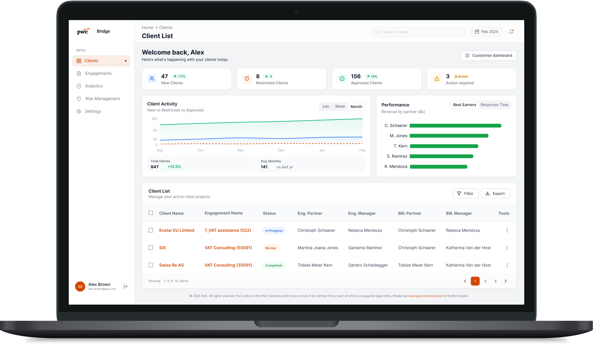

PwC Bridge
Consolidating fragmented tools into a single, role-aware workspace for PwC Switzerland's Tax & Technology teams.

Original platform designs cannot be shared due to PwC's NDA. The visuals on this page are an independent, conceptual redesign produced after the project, illustrating how I would re-imagine the platform without governance, legal, or ownership constraints. Created with AI-assisted tooling as part of an exploratory process.
From idea to interface, my first UX leadership role.
In January 2024, I was invited to join Project Bridge, an internal initiative to consolidate fragmented tools and information into a single, role-aware platform.
The goal was not visual reinvention but operational clarity: enabling teams to access client data, manage engagements, monitor risk status, initiate engagement letters, and connect frequently used tools from one central workspace.
At the stage I joined, UI polish was not the priority. The task was to build a functional, scalable foundation that could be validated in real working conditions and improved bit by bit from real usage.
Lead and sole UX/UI designer.
I worked within a cross-functional team of around ten, closest with two developers and a project manager, with continuous input from stakeholders across seniority levels.
Because the project sat within Tax & Technology rather than a central design team, we operated under strict PwC brand guidelines and an existing component library. While I actively identified components that could be improved, many suggestions were declined due to governance and ownership constraints. Designing within these limits was a core part of the challenge.
- Team size10 people, cross-functional
- ReportingTax & Technology
- ConstraintsPwC brand system, locked component library
- MethodsStakeholder interviews, IA mapping, prototyping, usability testing
- ToolsFigma, Miro, PwC design system
Many stakeholders were also our direct users.
Feedback loops were short, expectations high, and decisions often needed to balance user needs, business priorities, and organisational politics, all at once.
Stakeholder management became as important as interface design.
Each meeting was a chance to align competing perspectives. I learned to translate user-research insights into language that resonated with partners, developers, and tax specialists alike.
The pilot launched eleven months after kickoff.
Despite the complexity of the environment and the constraints of a locked design system, the pilot version went live in November 2024, less than a year after I joined.


Bridge is now widely used across PwC Switzerland, with plans to expand internationally.
After launch, the focus shifted to iterative improvement: analysing user feedback, refining flows, and shipping additional features requested by teams who were actively using the platform.
More importantly, the project shaped my approach to UX/UI design. It reinforced the value of user research in enterprise environments, the reality of designing within strict constraints, and the impact of incremental, evidence-based improvements over visual perfection.
Designed, validated, and shipped within a single calendar year despite governance complexity.
Two devs and a PM as core, with continuous stakeholder input across seniority levels.
Pilot validated in Switzerland; international rollout planned across other PwC member firms.
What this project taught me about design leadership.
Strong UX leadership isn't about ideal processes. It's about delivering clarity in complex systems.
The textbook playbook rarely survives contact with real organisations. The work is to find the version of "good enough" that genuinely serves users while respecting the constraints that exist for legitimate reasons.
When users are also stakeholders, design becomes diplomacy.
Short feedback loops cut both ways. They make iteration fast, and they make every decision political. Translating user research into language partners and specialists could act on was as important as the research itself.
Incremental improvements compound, visual perfection rarely does.
A working pilot in eleven months produced feedback that no amount of pre-launch polish could have produced. Each iteration after launch was sharper because it was grounded in real usage, not assumptions.
Designing within limits is its own discipline.
I learned to advocate for users without breaking trust with the system that enabled the platform to exist at all. Pragmatic trade-offs, well documented, ship products. Idealism alone does not.